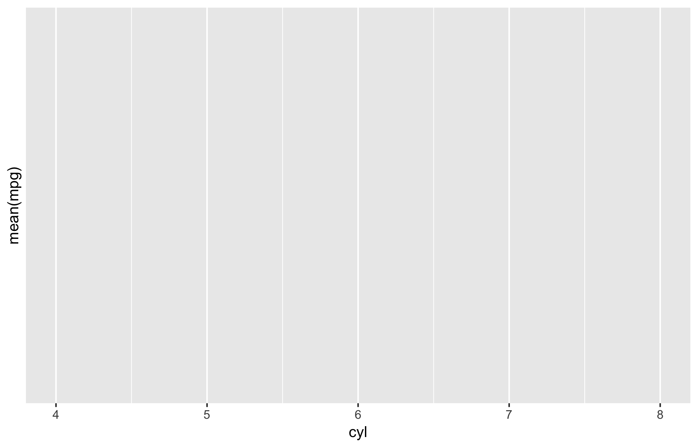
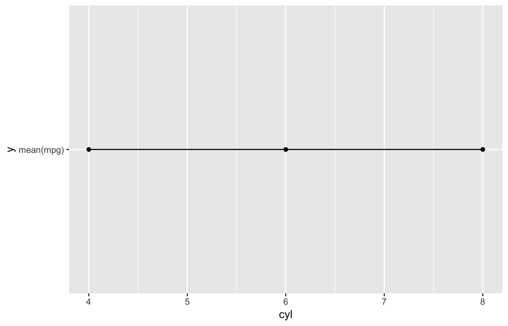
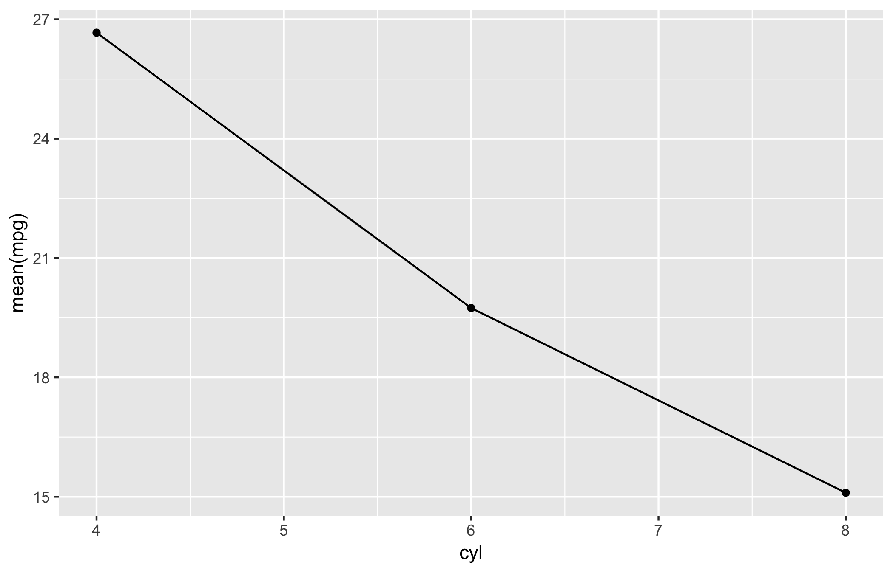
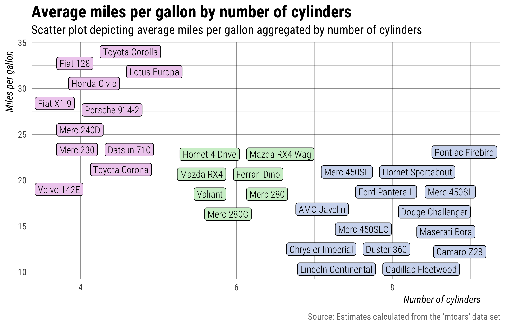

I still remember how hard it was to learn ggplot2
after only knowing a little about R1. Sure, the plots were pretty.
But compared to the ways I had used R before, ggplot2’s syntax seemed almost
counter-intuitive. Its pipe-like workflow of building layer-by-layer
was like nothing I had ever ever used before. Not to mention, I was unfamiliar
with its central terms of art like “geoms” and “aesthetics”.
But…still…the plots were really pretty.
Fortunately, the aesthetic motivator of being able to generate pretty plots
allowed me to percervere. And not long after truly committing myself to learning
how to ggplot2, I realized why everyone likes it so much–it’s actaully really
easy! Once I learned about the key building blocks of ggplot(), aes(),
and geom_.*()), I could create pretty plots for all sorts of data types and
relationships.
It’s in the details
Over time my #dataviz
has gotten a lot better I think, but it’s had very little
to do the actual plotting of data points (ggplot2 outputs beautiful plots by
default). Instead, my dataviz has improved because (a) I learned more about how to
correctly label scales, data points, and other visual dimensions and (b) I figured
out how to (re)size and save high-resolution plots using nice-looking fonts.
With this in mind, my goal with this post is to identify three common mistakes
users make when attempting to map variables from dplyr::summarize()
to aesthetic dimensions of a plot with ggplot2
and then conclude by describing a solution to these common mistakes.
Packages/styles
To follow along with the examples in this post, you will need to load the tidyverse set of packages and define a couple stylistic functions used throughout to make the plots even prettier.
## load tidyverse
library(tidyverse)
#> ── Attaching packages ───────────────────────────────────────────────────── tidyverse 1.2.1 ──
#> ✔ ggplot2 3.0.0.9000 ✔ purrr 0.2.5
#> ✔ tibble 1.4.2 ✔ dplyr 0.7.6
#> ✔ tidyr 0.8.1 ✔ stringr 1.3.1
#> ✔ readr 1.1.1 ✔ forcats 0.3.0
#> ── Conflicts ──────────────────────────────────────────────────────── tidyverse_conflicts() ──
#> ✖ dplyr::filter() masks stats::filter()
#> ✖ dplyr::lag() masks stats::lag()
## create style theme
my_theme <- function() {
theme_minimal(base_family = "Roboto Condensed") +
theme(plot.title = element_text(size = rel(1.5), face = "bold"),
plot.subtitle = element_text(size = rel(1.1)),
plot.caption = element_text(color = "#777777", vjust = 0),
axis.title = element_text(size = rel(.9), hjust = 0.95, face = "italic"),
panel.grid.major = element_line(size = rel(.1), color = "#000000"),
panel.grid.minor = element_line(size = rel(.05), color = "#000000"),
legend.position = "none")
}
my_labs <- function() {
labs(title = "Average miles per gallon by number of cylinders",
subtitle = "Scatter plot depicting average miles per gallon aggregated by number of cylinders",
x = "Number of cylinders", y = "Miles per gallon",
caption = "Source: Estimates calculated from the 'mtcars' data set")
}
my_save <- function(file) {
ggsave(file, width = 7, height = 4.5, units = "in")
}Data
The data set used to demonstrate the mistakes (and the eventual solution) is
mtcars, which is from the core datasets
package. Specifically, the examples feature the mpg (miles per gallon)
and cyl (number of cylinders) variables.
## print first six rows
head(mtcars)
#> mpg cyl disp hp drat wt qsec vs am gear carb
#> Mazda RX4 21.0 6 160 110 3.90 2.620 16.46 0 1 4 4
#> Mazda RX4 Wag 21.0 6 160 110 3.90 2.875 17.02 0 1 4 4
#> Datsun 710 22.8 4 108 93 3.85 2.320 18.61 1 1 4 1
#> Hornet 4 Drive 21.4 6 258 110 3.08 3.215 19.44 1 0 3 1
#> Hornet Sportabout 18.7 8 360 175 3.15 3.440 17.02 0 0 3 2
#> Valiant 18.1 6 225 105 2.76 3.460 20.22 1 0 3 1Names from summarize()
A popular workflow in R uses dplyr to group_by()
and then summarise()2 variables.
It’s an intuitive and easy way to aggregate and describe data, especially along
multiple dimensions. The cost of being both powerful and user-friendly,
however, is its arguably inconvenient default method for assigning names to
summarized values. As the code illustrates below, users can provide their own
names when using summarize().
## explicitly named summarize variable
mtcars %>%
group_by(cyl) %>%
summarize(mpg = mean(mpg))
#> # A tibble: 3 x 2
#> cyl mpg
#> <dbl> <dbl>
#> 1 4 26.7
#> 2 6 19.7
#> 3 8 15.1But when users don’t explicitly name the summarized values, instead of inheriting
the name of a summarized variable (in this case mpg), variables are named–by
default–with the text of the expression used to create the summarized value.
For example, the code below summarizes by estimating the mean mpg for cars
grouped by number of cyl. The code is fairly straight forward, and you can
probably see why users often assume the returned summarized data would contain
two variables cyl and mpg.
## unnamed summarize variable
mtcars %>%
group_by(cyl) %>%
summarize(mean(mpg))
#> # A tibble: 3 x 2
#> cyl `mean(mpg)`
#> <dbl> <dbl>
#> 1 4 26.7
#> 2 6 19.7
#> 3 8 15.1As you can see above, the variable names are wind up being cyl and mean(mpg)–
instead of simply cyl and mpg. This default behavior may seem obnoxious at
first, but it makes a lot of sense when you think about using two or more
variables when calculating summarize() values.
Regardless, while it’s definitely a good idea to provide your own summary variable names, you will invariably find yourself in a situation in which you would like to plot summarized variables that were named using with the text of the expressions used to create them.
Mapping incorrect names
When visualizing data with ggplot2, one of the
first and most important steps entails mapping observed variables in the data
set to the aesthetic dimensions of a plot. But aesthetic mapping will only work as
expected when you provide the correct names via ggplot2::aes().
The following section describes three common mistakes users make that result in the mapping of incorrect names.
1. Assuming a statistic inherits the name of a variable.
A common mistake is to assume that summarizing via mean() or median()
results in a variable with the same name. For example, if we summarize the mean
of mpg like we did above, i.e., summarize(mean(mpg)), and then try to map
y = mpg, we get an error because “mpg” doesn’t exist.
## this gets an error because there is no variable named "mpg"
mtcars %>%
group_by(cyl) %>%
summarize(mean(mpg)) %>%
ggplot(aes(x = cyl, y = mpg)) +
geom_point() +
geom_line() +
my_theme() +
my_labs()
Error: Aesthetics must be either length 1 or the same as the data (3): x, yWe know from the summarize section above the variable’s name is actually
mean(mpg). As this example illustrates, it is incorrect to assume that
summarized estimates inherit the name of the variable they summarize. This may
seem annoying at first, but it makes sense when you think about times when you
may want to summarize using two or more variables in the data set.
2. Repeating the expression used in summarize().
A second common mistake is to assume that you can simply repeat the expression
used in summarize() when specifying aesthetic mappings.
## this also doesn't work because it tries to caculate the mean of mpg
mtcars %>%
group_by(cyl) %>%
summarize(mean(mpg)) %>%
ggplot(aes(x = cyl, y = mean(mpg))) +
geom_point() +
geom_line() +
my_theme() +
my_labs() +
my_save("img/empty-plot.png")
#> Warning in mean.default(mpg): argument is not numeric or logical: returning
#> NA
#> Warning in mean.default(mpg): argument is not numeric or logical: returning
#> NA
#> Warning in mean.default(mpg): argument is not numeric or logical: returning
#> NA
#> Warning: Removed 3 rows containing missing values (geom_point).
#> Warning: Removed 3 rows containing missing values (geom_path).
#> Warning in mean.default(mpg): argument is not numeric or logical: returning
#> NA
#> Warning in mean.default(mpg): argument is not numeric or logical: returning
#> NA
#> Warning in mean.default(mpg): argument is not numeric or logical: returning
#> NA
#> Warning: Removed 3 rows containing missing values (geom_point).
#> Warning: Removed 3 rows containing missing values (geom_path).
The result is a handful of warnings and an empty plot. The above code fails
because it tries to calculate mean of mpg, which, again, doesn’t exist in the
summarized data.
3. Passing the expression as a quoted string.
The third common mistake is to treat the summarized expression name as a string.
## if we put quotes around it, it assumes it's a string
mtcars %>%
group_by(cyl) %>%
summarize(mean(mpg)) %>%
ggplot(aes(x = cyl, y = "mean(mpg)")) +
geom_point() +
geom_line() +
my_theme() +
my_labs() +
my_save("img/static-y.png")
This time we get a plot and no warnings, but it’s clearly not right. It shows
every y value is exactly the same, but it seems far fetched to think the
average miles per gallon would not vary with number of cylinders.
In this case, the literal string "mean(mpg)" is mapped to the y variable
value, which means it’s converted to a factor and the single factor level is
coded as 1 at each observation.
Solution: use tick marks
At this point it should be clear the name of the summarized mpg variable is
actually “mean(mpg),” only now we also know wrapping the expression with quotes
doesn’t work because it assumes the expression is a literal string, not a
variable name.
The solution to correctly mapping unnamed summarize() variables is to use
tick marks–the apostrophe-like symbol at the top-left of your keyboard. Tick
marks work a lot like quotes insofar as they open and close and wrap all
elements into a single object. The difference is tick marks assume the marked
object references a symbol. To illustrate, the code below assigns 10 random
numbers to x and then prints it using both ticks and quotes.
## assign 10 random numbers to x
x <- rnorm(10)
## print x wrapped in quotes
"x"
#> [1] "x"
## print x wrapped in tick marks
`x`
#> [1] -1.261127 -0.460150 0.242471 1.102429 1.075430 -1.026970 -1.609631
#> [8] 1.240303 1.494035 0.377001So, really, tick marks are used to distinguish symbols that contain one or more unfriendly punctuation/characters, e.g., parenthesis, dashes, spaces, etc.
With this knowledge, we can now fix the featured summarize() example by
wrapping the summarized expression, which functions as the name of the
summarized variable, in tick marks.
## if we put quotes around it, aes() assumes we are entering a string
mtcars %>%
group_by(cyl) %>%
summarize(mean(mpg)) %>%
ggplot(aes(x = cyl, y = `mean(mpg)`)) +
geom_point() +
geom_line() +
my_theme() +
my_save("img/tick-marks.png")
Of course, most audiences don’t really want to see expression text on a plot,
so we can dress it up a bit by using the previusly defined my_labs() function.
## if we put quotes around it, aes() assumes we are entering a string
mtcars %>%
group_by(cyl) %>%
summarize(mean(mpg)) %>%
ggplot(aes(x = cyl, y = `mean(mpg)`)) +
geom_point() +
geom_line() +
my_theme() +
my_labs() +
my_save("img/with-labs.png")
Or we can really dress it up and include the labelled data points as an additional layer to the plot.
## include row names as a variable
mtcars2 <- mtcars
mtcars2$make <- row.names(mtcars)
mtcars2$mpg[mtcars2$cyl == 4] <- mtcars2$mpg[mtcars2$cyl == 4] + runif(sum(mtcars2$cyl == 4), 0.0, .4)
mtcars2$mpg[mtcars2$cyl == 6] <- mtcars2$mpg[mtcars2$cyl == 6] + runif(sum(mtcars2$cyl == 6), -.4, 0.0)
mtcars2$mpg[mtcars2$cyl == 8] <- mtcars2$mpg[mtcars2$cyl == 8] + runif(sum(mtcars2$cyl == 8), -.3, 0.0)
## add labels to plot and to raw data points
mtcars %>%
group_by(cyl) %>%
summarize(mean(mpg)) %>%
ggplot(aes(x = cyl, y = `mean(mpg)`)) +
geom_point(size = 2.5) +
geom_line(alpha = .6) +
ggrepel::geom_label_repel(data = mtcars2,
aes(y = mpg, color = factor(cyl), fill = factor(cyl), label = make),
family = "Roboto Condensed", label.padding = 0.2, label.size = .05,
min.segment.length = 100, color = "white", size = 3.0, alpha = .8) +
my_theme() +
my_labs() +
my_save("img/tick-marks-final.png")
Notes
1 I knew just enough to (a) read in data, (b)
do some structural equation modeling, and ©
generate some simple plots via base::plot() and base::histogram().
2 The s and z toward the end of summarise() and summarize()
are interchangeable.